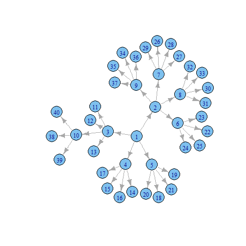

Sankey from Scratch using rCharts, d3.js, and igraph
Introduction
This example will walk through the steps of using the R package igraph to create a tree network for a sankey diagram. This is a great exercise to learn some basics of igraph, explore the construction of a sankey, and determine the conditions for a network to be drawn properly as a sankey. After all of this, we will plot our network with the rCharts implementation of the d3.js sankey plugin.
Build a Network
Let's first start by loading the igraph and rCharts packages. Then we will use graph.tree to build a tree network with 40 vertices with 4 children.
require(igraph)
require(rCharts)
g <- graph.tree(40, children = 4)
For fun, we will assign a weight of 1 E(g)$weight = 1 for each edge and then draw a Sankey diagram using rCharts. Going forward I will try to explain the R code through comments in the code block.
Plot Our Sankey to Find a Problem
E(g)$weight = 1
edgelist <- get.data.frame(g) #this will give us a data frame with from,to,weight
colnames(edgelist) <- c("source","target","value")
#make character rather than numeric for proper functioning
edgelist$source <- as.character(edgelist$source)
edgelist$target <- as.character(edgelist$target)
sankeyPlot <- rCharts$new()
sankeyPlot$setLib('libraries/widgets/d3_sankey')
sankeyPlot$setTemplate(script = "libraries/widgets/d3_sankey/layouts/chart.html")
sankeyPlot$set(
data = edgelist,
nodeWidth = 15,
nodePadding = 10,
layout = 32,
width = 960,
height = 500
)
sankeyPlot$print(chartId = 'sankey1')
Interact with the sankey plot a little, and try to find the problem in our hastily constructed network. Hovering over the vertex 4 will reveal our issue. The edge from 1 to 4 is not as big as the sum of the edges going out from 4. For this to make sense, unless 4 is magically creating something, the sum of the inflow should equal the sum of the outflow. Since 4 has four children each with weight of 1 (outflow = 1 + 1 + 1 + 1 = 4), we would expect the inflow to also be 4. It is only 1 though since we made all our edges' weights = 1 E(g)$weight = 1. How then would we build our network with edge weights so that for each vertex, the sum of in equals the sum of out.
Fix Our Problem For a Beautiful Sankey
I am a network novice, so while the code below works, I am sure there are better ways of accomplishing the desired result. I heavily commented the code, but I will quickly describe the steps. The code starts at the lowest level of the heirarchy, or those vertexes where there is nothing going out (out degree = 0). In our network, these are 11 through 40. With igraph we can identify these by V(g2)[degree(g2,mode="out")==0]. For these we will assign a weight. Then we will loop through all of the edges summing all of the weights of the out until we have reached the top of the heirarchy.
g2 <- graph.tree(40, children=4)
#to construct a sankey the weight of each vertex should be the sum
#of its outgoing edges
#I believe the first step in creating a network that satisfies this condition
#is define a vertex weight for all vertexes with out degree = 0
#but first let's define 0 for all
V(g2)$weight = 0
#now for all vertexes with out degree = 0
V(g2)[degree(g2,mode="out")==0]$weight <- runif(n=length(V(g2)[degree(g2,mode="out")==0]),min=0,max=100)
#the lowest level of the heirarchy is defined with a random weight
#with the lowest level defined we should now be able to sum the vertex weights
#to define the edge weight
#E(g2)$weight = 0.1 #define all weights small to visually see as we build sankey
E(g2)[to(V(g2)$weight>0)]$weight <- V(g2)[V(g2)$weight>0]$weight
#and to find the neighbors to the 0 out degree vertex
#we could do V(g2)[nei(degree(g2,mode="out")==0)]
#we have everything we need to build the rest by summing
#these edge weights if there are edges still undefined
#so set up a loop to run until all edges have a defined weight
while(max(is.na(E(g2)$weight))) {
#get.data.frame gives us from, to, and weight
#we will get this to make an easier reference later
df <- get.data.frame(g2)
#now go through each edge and find the sum of all its subedges
#we need to check to make sure out degree of its "to" vertex is not 0
#or we will get 0 since there are no edges for vertex with out degree 0
for (i in 1:nrow(df)) {
x = df[i,]
#sum only those with out degree > 0 or sum will be 0
if(max(df$from==x$to)) {
E(g2)[from(x$from) & to(x$to)]$weight = sum(E(g2)[from(x$to)]$weight)
}
}
}
edgelistWeight <- get.data.frame(g2)
colnames(edgelistWeight) <- c("source","target","value")
edgelistWeight$source <- as.character(edgelistWeight$source)
edgelistWeight$target <- as.character(edgelistWeight$target)
sankeyPlot2 <- rCharts$new()
sankeyPlot2$setLib('libraries/widgets/d3_sankey')
sankeyPlot2$setTemplate(script = 'libraries/widgets/d3_sankey/layouts/chart.html')
sankeyPlot2$set(
data = edgelistWeight,
nodeWidth = 15,
nodePadding = 10,
layout = 32,
width = 960,
height = 500
)
sankeyPlot2
Another Look at Our Network
There are very good examples illustrating the use of igraph to plot a network. This is not one of these examples. For fun though, let's plot the network with igraph using just the defaults to compare it to our Sankey output from above.
plot(g2)

Lots More Sankey
Believe it or not, there is an entire site devoted to sankey diagrams. For all the sankey you can handle, check out http://sankey-diagrams.com. Here are a couple more sankeys generated from rCharts: http://rcharts.io/viewer/?6001601#.UeWfuY3VCSo, http://rcharts.io/viewer/?6003605, http://rcharts.io/viewer/?6003575.